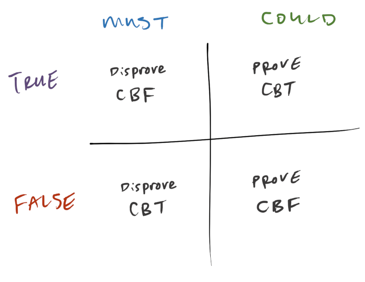

Making and Using Hypos
To learn how to draw games, you needed knowledge. Once you memorize how to draw the common game types and rules, drawing games is just a matter of creatively applying that knowledge.
In contrast, learning how to get points is more a matter of skill. The key skill for getting points on games is making hypos and then using them to prove and disprove answers.
This page teaches you how to make and how to use hypos.
Note
At first, making hypos may feel laborious. Using hypos may feel unnatural.
With deliberate practice, you can learn to make hypos smoothly and use them efficiently.
What are hypos?
A hypo is one possible arrangement of the elements on the board.
A complete hypo takes care of the rules. A hypo can take care of a rule in two ways:
- you applied the rule to make the hypo, or
- the rule can't possibly be broken in the hypo.
Taking care of rules
Elements: A, B, C, D
Rule 1: A is before B
Rule 2: C can't go first
Question: If B is in second, which of the following must be true?
Start from the IF: _ B _ _
Apply Rule 1: A B _ _
Rule 2 cannot be broken. The hypo is complete.
Add the remaining elements C and D in a cloud: A B (C D)
Flexible hypos
When elements can freely go into multiple spots use a cloud (A B), slashes A/B, arrows, or some other visual representation of their freedom.
That way your one hypo will actually be several hypos, which will make it more useful on future questions.
Make hypos to answer the questions
How you make hypos depends on what type of question you're answering.
There are 3 major Games question types:
| Type | Example |
|---|---|
| 1. LIST | "Which of the following is a complete and accurate list?" |
| 2. IF | "If X is in 3, which of the following must be true?" |
| 3. WHICH | "Which of the following must be true?" |
Doing the questions in that order (LIST and IF before WHICH) will help you make hypos.
LIST questions give you a free hypo
The very first question is usually a LIST question. Typically, on this first question, each rule will eliminate one wrong answer. Once you've gone through the rules one-by-one, you should be left with 1 answer remaining. That remaining answer is your first valid hypo.
Tip
I like to quickly write down the answer to that first question, so I don't have to look back later.
IF questions give you a starting point
The IF questions are nice to do next because they give you a starting point.
You create a fresh board with the new information (like X in 3) and then you follow the rules one-by-one to complete the hypo.
Hard IFs
There are easy IF and there are hard IF questions. The difference is that on an hard IF question you won't be able to smoothly follow the rules to make a complete hypo. At some point, perhaps even immediately after adding the new information, you'll get stuck.
Sometimes you can get unstuck by finding a split. Otherwise pretend you're doing a WHICH question.
Use the answers on WHICH questions
Ideally, by the time you get to the WHICH questions you've made several hypos. You can then use these hypos to eliminate the 4 wrong answers and/or select the 1 correct answer.
Reuse, but don't revise hypos
You might be tempted to quickly switch two elements in your hypo to make it useful on a future question.
This switching is dangerous. When you make the switch, you might accidentally break a rule.
Instead, when you make your hypos, make them flexible, using clouds or arrows or slashes.
If you do revise a hypo, quickly check all the rules to make sure you didn't break anything.
Sometimes, however, your existing hypos wont get you all the way. If you're left with 2 or more answers, then you'll then need to make more hypos to test the remaining answer choices. You'll use the answer choices a bit like you would an "IF" question--each answer becomes a starting point for a new hypo.
Making hypos to test answer choices
Elements: T, W, X, Y, Z
Rule 1: Z can't go first
Rule 2: X comes immediately before or after Y
Rule 3: T cannot go immediately before or after W
Valid Hypo: X Y T Z W
Question:
- Which of the following could be true?
Xis lastTis separated fromWby exactly 2 spacesZis 3rd
Step 1: Scan to see if any of the answers are true in the hypo. Result: nope, darn!
Step 2: Test (a).
Assume X is last, and see if you can make it work: _ _ _ _ X
Apply rule 2: _ _ _ Y X
Take care of rule 1: T/W _ _ Y X
Take care of rule 3: T/W Z _ Y X
Hooray! All the rules are taken care of! We can choose (a) and move on.
Bonus: add in the leftover elements to make the hypo more visually useful for the future: T/W Z W/T Y X
Smoothly make hypos by following the overlapping rules
To make hypos smoothly, follow the rules one-by-one. Or better yet, go one overlapping rule at a time. An overlapping rule shares something with the information in your half-formed hypo. Typically, overlaps come from shared elements or restrictions on spaces.
Example of using overlap
Elements: M O R S
Rule 1: M can't go first.
Rule 2: O can't go last.
Rule 3: R is after S.
Question: If S is in 2nd, which of the following must be true?
Start from the IF: _ S _ _
Overlap: rule 3. S is in our hypo and in rule 3
Apply rule 3: _ S (R _)
It feels like we've now impacted last place, so maybe consider rule 2.
But the last place is ambiguous, it might be R or it might not.
We could split our hypo based on R, but let's see if rule 1 is more useful.
Consider rule 1: The first spot cannot be M. There are only 2 elements left M and O, so it must be O.
Apply rule 1: O S (R _)
With O on the board, rule 2 is taken care of. Our hypo is complete. (The answer is probably "O in 1st", because it's a "must be" question).
Add in M as a favor to your future self: O S (R M)
When you feel stuck, ask "Who's left?"
Perhaps these remaining elements are limited in where they can go? Maybe you've already taken care of the rules they're attached to? Or maybe they're the leftover elements, the elements without any rules, and they can go anywhere and you're done?
Finish your hypos
When you put all the elements into the board, or at least indicate that they could go anywhere, you'll make your hypo easier to read and thus more useful for your future self.
Use Hypos Effectively
Hypos are powerful, but their power is limited. A hypo is just one possibility. That means a hypo cannot show you what must be the case. A hypo can only show you what could happen.
- On "could" questions, use hypos to prove the 1 correct answer.
- On "must" questions, use hypos to disprove the 4 incorrect answers.
Adding in the concepts of true and false makes this even trickier:
| Question | How to evaluate the answers... |
|---|---|
| Could be True | the answer is right if it happened, even just one time, in any hypo |
| Must be True | the answer is wrong if it failed to happen in any hypo |
| Could be False | the answer is right if it failed to happen in any hypo |
| Must be False | the answer is wrong if it happened in any hypo |
Example
Suppose we knew this was a valid hypo:
Shirt 1: red and blue
Shirt 2: red and yellow
And we have these statements to evaluate:
A. Both shirts contains yellow.
B. Both shirts contain red.
What do we know about these statements, based on our hypo?
A: We don't know. It didn't happen in our hypo.
B: Yes. This did happen in our hypo, both shirt 1 and 2 contain red.
A: No. Shirt 1 has no yellow. This doesn't have to be true.
B: We don't know. It happened once, but that doesn't mean it always happens.
A: Yes. Shirt 1 has no yellow. It could be false.
B: We don't know. Both shirts were red in this hypo, but maybe they wouldn't be in another hypo.
A: We don't know. Shirt one doesn't have yellow, but maybe it will in another hypo.
B: No. It is true once that both shirts have red, so this doesn't have to be false.
Assuming A and B are the only two answers, how should we approach each type of question?
Defer on A, then select B and move on
Eliminate A, then select B (because B is the only remaining answer).
Select A (and move on, don't need to read B)
Defer on A, then eliminate B, then select A (because A is the only remaining answer).
Or if that all that text feels a bit bewildering, here's a more visual way to think about it:

Pause to remind yourself what you're looking for in your hypos after looking at an answer choice
Before you look to your hypos to (dis)prove an answer, take a beat. Remind yourself what you want to see, and what you'll do when you see it.
For example, suppose you were dealing with a "could be false" question, and the answer choice you were considering was "(a) X is first."
What do you want to see in your hypo? You want to see X anywhere but 1st.
And what will you do when you see that? You'll choose (a) and move on.
So silently tell yourself: "If I see X anywhere but first, I will choose (a)."
Skill Practice Suggestions
- Name the type of all the question in a section.
- Skip the draw step, just get into the questions and make hypos.
- Make as many hypos as possible. Prove and disprove every answer 2 different ways.
- Make as few hypos as possible. Get maximal re-use out of each hypo you make.
- Put "Overlap" on a sticky note while you make hypos.
- Put "Who's Left" on a sticky note while you make hypos.
- Tell yourself (or write down) what you want to (dis)prove on each question and each answer.